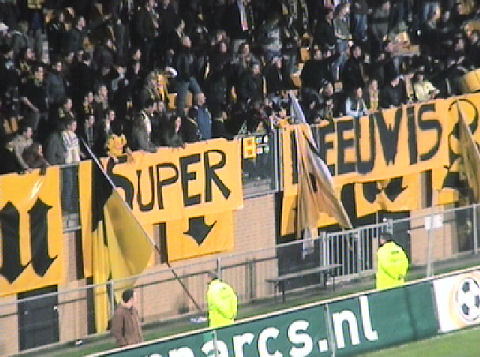

|
Roda JC - FC Groningen (0-1) 30 maart 2007
|
Spandoek op west: "Humphrey Rudge moet blijven".
Lovre schiet keihard in de handen van Kujovic.
Na een voorzet van Nevland werkt Lovre de bal tegen de onderkant van de lat. Uit
de
rebound ontstaat een kleine scrimmage waarin Kujovic net de bal kan pakken
voordat Fledderus van dichtbij in kan schieten.
Van der Linden geblesseerd na een botsing.
Terwijl Van der Linden langs de kant wordt behandeld scoort De Fauw. De bal gaat
een halve meter over de doellijn.
De spelers juichen, het publiek juicht, echter........
... scheidsrechter Wiedemeijer keurt het doelpunt af!
De logische protesten.
Wiedemeijer raadpleegt zijn grensrechter die eveneens niet heeft kunnen
constateren dat de bal over de lijn is gegaan.
Wiedemeijer maakt het nog bonter door Sibum geel te geven. Het
stadion kolkt van
woede over zoveel onrecht.
Opmerkelijk veel blessures bij FCG.
Uit een corner belandt de bal tussen een kluwen van spelers. Kujovic krijgt de
bal
niet onder controle waarna Lovran kan inschieten: 0-1, (37').
Feestje bij de 100 Groningensupporters.
.-. 
.-.
In de tweede helft krijgt doelman Van Loo gratis bier en een gele kaart voor
tijdrekken.
Roda valt aan en heeft het meeste balbezit. Het counterende Groningen verzuimt
hier de wedstrijd te beslissen als Meerdink keihard tegen de lat schiet.

De belegering van Roda op het doel van Van Loo blijft vruchteloos.
Vlak voor tijd mag Ramzi inrukken vanwege een tweede gele kaart.
Het publiek heeft vanavond bijzonder weinig sympathie voor de arbitrage.
Ondanks alle ellende heeft Izz zijn seizoenskaart niet verscheurd ;-)
Saeijs is een van de weinige spelers die het lef heeft de arbitrage geen hand te
geven. Hier steekt Wiedemeijer vergeefs zijn hand toe.
Ondanks deze frustrerende wedstrijd was het nog redelijk gezellig in de Kickoff.
Van
de spelers kwamen Bouchiba, Van Dessel, Oper en Sibum.
Bouchiba verliet de Kickoff overigens zonder sjlieps :-))
© Koempels Pleasure Dome
|